CHƯƠNG 6: HƯỚNG DẪN SỬ DỤNG
6.1 Hướng dẫn đăng ký làm thành viên
Bạn thực hiện theo các bước sau đây (gồm 5 bước) để đăng bài trên Website Quanhta.vn
Bước 1: Truy nhập vào Quanh Ta: Để đăng bài, người dùng cần truy cập vào trang Quanhta.vn và chọn mục “Đăng ký” ở góc trên cùng bên phải để tiến hành đăng ký thành thành viên của Quanh Ta.
Bước 2: Bạn truy cập vào mục “Tạo tài khoản”
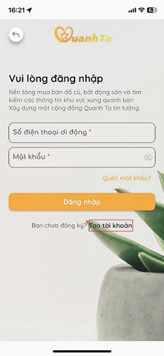Bước 3: Điền thông tin: Người dùng điền thông tin vào mục: ”Tạo tài khoản mới”. Các thông tin gồm có: Họ và tên thật, số điện thoại và mật khẩu. Sau đó bấm nút “Tạo tài khoản”.
Bước 4: Xác thực tài khoản: Mục “Xác thực đăng ký” xuất hiện. Mã Otp gồm 5 chữ số sẽ được gửi tới điện thoại có số tài khoản vừa đăng ký, sau khi mã Otp được nhập vào phần “Xác thực đăng ký”
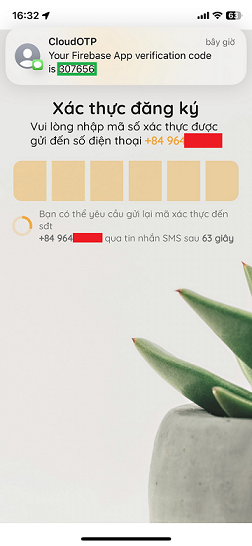Bước 5: Đăng nhập: Màn hình chuyển về mục “Vui lòng đăng nhập” và người dùng (giờ là thành viên) sẽ nhập số điện thoại và mật khẩu để đăng nhập. Nếu số điện thoại và mật khẩu đúng như đã đăng ký, đăng nhập sẽ thành công.
Lưu ý:
- Mỗi số điện thoại chỉ có thể được sử dụng để đăng ký một tài khoản duy nhất.
- Sau khi hoàn tất quá trình đăng ký tài khoản thành công, người dùng sẽ chính thức trở thành thành viên của Quanh Ta.
- Để biết thêm chi tiết về quy định và quy tắc liên quan đến việc đăng ký, xin vui lòng xem tại mục "Quy định về Đăng ký".
- Để hiểu rõ hơn về quyền lợi và trách nhiệm của thành viên, vui lòng xem tại mục "Quyền lợi và Trách nhiệm của Thành viên".
6.2 Đăng bài
Không có phí đăng bài. Người đăng bài đăng tin và không mất bất kỳ chi phí nào.
Để đăng bài bạn cần phải là thành viên của Quanh Ta. Khi đã là thành viên, bạn thực hiện theo các bước sau đây (gồm 5 bước):.
Bước 1: Người đăng tin cần chuẩn bị nội tin và hình ảnh đi kèm. Nội dung tin phải tuân thủ những quy định trong “Quy định về nội dung đăng tin”. Vui lòng bấm vào đây để xem quy định trên trước khi đăng bài.
Bước 2: Lựa chọn chủ đề đăng tin là Bất động sản thì truy cập vào nút “Nhà đất” hoặc nếu lựa chọn đăng bán đồ cũ bằng cách nhấn nút “Đồ dùng”.
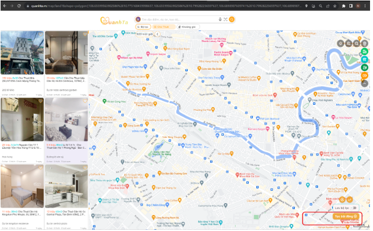Bước 3: Đăng bài
- Các mục đánh dấu “*” màu đỏ là bắt buộc điền thông tin/đăng hình ảnh. Riêng giá nếu không điền hoặc điền “0” thì được hiểu là miễn phí.
- Người đăng bài được lựa chọn các kênh liên lạc bằng cách nhấn vào các ô trong “Phương thức liên lạc”: Đó là lựa chọn chỉ liên hệ qua ứng dụng (chat box) hoặc người mua liên lạc qua số điện thoại đang sử dụng (Dùng số của tôi) hoặc liên lạc qua một số khác (Dùng số khác).
- Riêng vị trí của bất động sản đang rao bán thì được xác nhận trong mục “Nhập địa chỉ và chọn tọa độ trên bản đồ”. Khi truy cập vào mục này, bản đồ và biểu tượng định vị sẽ xuất hiện và người dùng có thể dịch chuyển bản đồ để đặt định vị đúng vị trí mong muốn. Sau đó nhấn nút “Tiếp tục” để trở về mục “Tạo bài đăng”.
- Các mục đánh dấu “*” màu đỏ là bắt buộc điền thông tin/đăng hình ảnh.
- Người đăng bài được lựa chọn các kênh liên lạc bằng cách nhấn vào các ô trong “Phương thức liên lạc”: Đó là lựa chọn chỉ liên hệ qua ứng dụng (chat box) hoặc người mua liên lạc qua số điện thoại đang sử dụng (Dùng số của tôi) hoặc liên lạc qua một số khác (Dùng số khác).
- Riêng vị trí của đăng tin thì chỉ lấy địa chỉ phường, không lấy tọa độ chính xác và sẽ không hiển thị tọa độ chính xác cho người xem tin.
- Vị trí của phường không được người đăng lựa chọn ở mục đăng bài mà để mặc định 1 trong hai vị trí nhà hoặc cơ quan được được người đăng xác nhận ở màn hình chính của mục “Đồ dùng”.
- Việc xác nhận vị trí của phường được đăng bắt buộc người dùng xác nhận bằng tính năng lấy vị trí từ điện thoại (my location).
a. Khi bài đăng là “Bất động sản”
- Truy cập vào nút “Tạo bài đăng” ở góc dưới cùng tay phải để mở trang đăng bài
- Lựa chọn giữa 2 mục “Bán” nếu muốn bán và “Cho Thuê” nếu muốn đăng bài cho thuê.
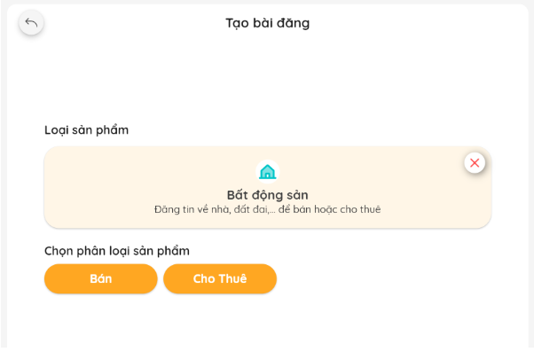- Điền thông tin và hình ảnh đã chuẩn bị vào tất cả các mục trong phần “Tạo bài đăng”. Đầu tiên là nhấn vào “Phân loại sản phẩm” để lựa chọn loại sản phẩm bất động sản muốn đăng. Sau đó điền vào các mục còn lại
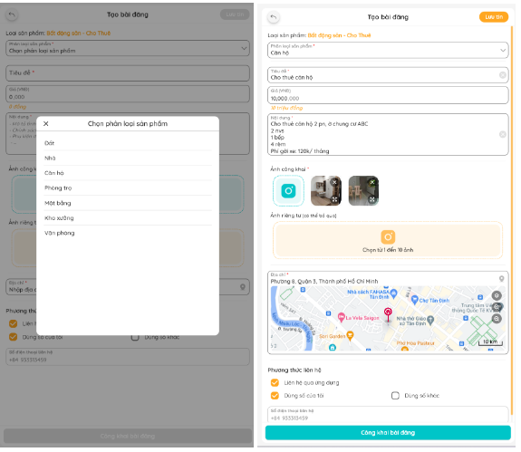- Lưu ý:
- Sau khi hoàn tất tất cả các thông tin mục “Tạo bài đăng”, nhấn vào nút “Công khai bài đăng” để đăng bài.
b. Khi bài đăng là “Đồ dùng”
- Truy cập vào nút “Tạo bài đăng” ở góc dưới cùng tay phải để mở trang đăng bài cho mục “Đồ dùng”
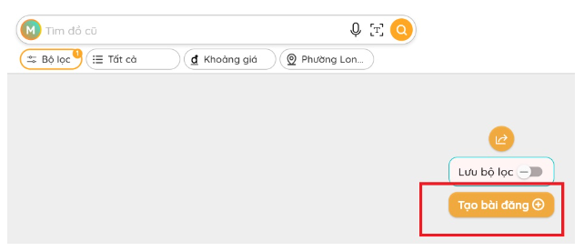- Điền thông tin và hình ảnh đã chuẩn bị vào tất cả các mục trong phần “Tạo bài đăng”. Đầu tiên là nhấn vào “Phân loại sản phẩm” để lựa chọn loại sản phẩm đồ dùng muốn đăng bán. Sau đó điền vào các mục còn lại
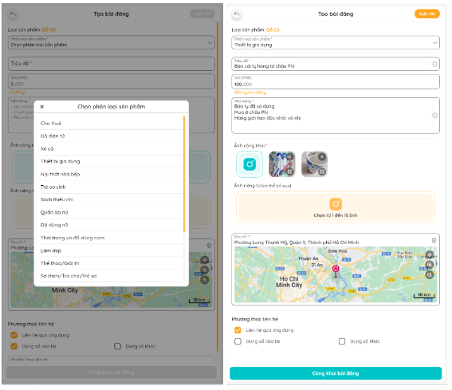- Lưu ý:
- Sau khi hoàn tất tất cả các thông tin mục “Tạo bài đăng”, nhấn vào nút “Công khai bài đăng” để đăng bài.
Bước 4: Duyệt bài:
Bài đăng sau đó sẽ được đưa vào mục “Quản lý bài đăng” của mỗi thành viên. Bài đăng vẫn ở chế độ “Chờ Duyệt” trước khi được duyệt và chỉ có người đăng bài và admin mới có thể thấy nội dung bài đăng.
Sau khi bài đăng được duyệt, bài đăng chuyển sang chế độ “Công khai”, lúc đó bài đăng mới chính thức được xuất hiện trên bản tin.
6.3 Quản lý tin đăng, sửa bài, ẩn bài hoặc xóa bài
a. Hướng dẫn chung:
- Người đăng bài vẫn có thể chỉnh sửa bài đăng, xóa bài trước hoặc sau khi được duyệt.
- Người đăng bài có thể “chỉnh sửa”, “ẩn bài”, hay “xóa” bài ngay sau khi bấm nút công khai bài đăng (hình bên dưới).
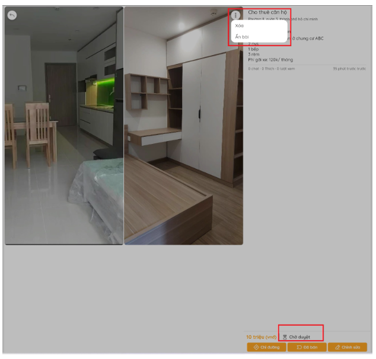Hoặc ở mục quản lý bài đăng của thành viên. Cách vào mục “Quản lý bài đăng” như sau:
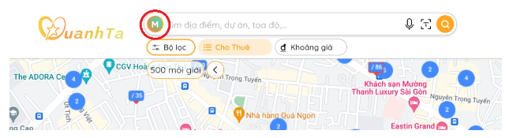 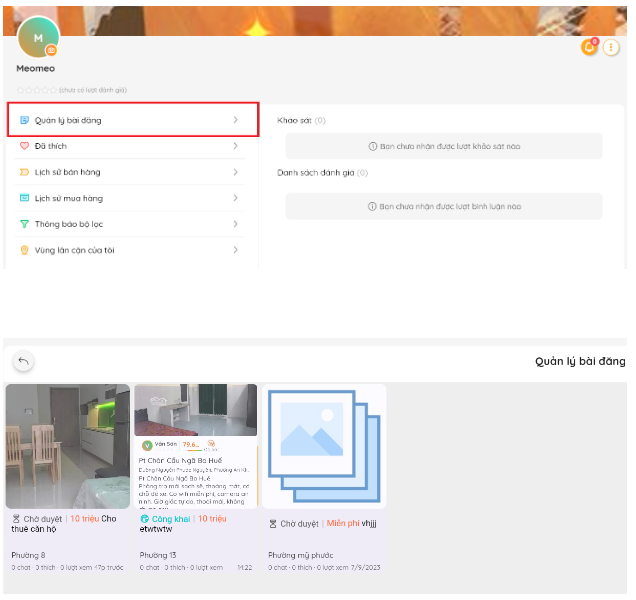- Nếu sửa bài sau khi được duyệt thành công (khi bài đã công khai), bài đăng sẽ chuyển về trạng thái “Riêng tư” và cần được duyệt để được “Công khai”.
- Ban quản trị sẽ tiến hành kiểm duyệt nội dung tin đăng trong thời gian 24h kể từ khi Người Bán đăng tin. Những tin nào sai quy định đăng tin sẽ được phản hồi yêu cầu chỉnh sửa qua việc nhắn tin cho Người Bán. Khi nào Người Bán sửa lại tin đăng theo đúng quy định Ban quản trị mới cho hiển thị lên Website.
b. Xóa bài đăng:
- Khi lựa chọn xóa bài đăng, người đăng bài sẽ được xác nhận lại một lần nữa về quyết định của mình: “Bạn có muốn xóa bài đăng? Thao tác này sẽ không hoàn lại!”.
- Nhấn nút “Xác nhận” trong thông báo ở hình dưới nếu muốn xóa bài đăng hoặc bấm “Hủy” nếu thay đổi suy nghĩ. 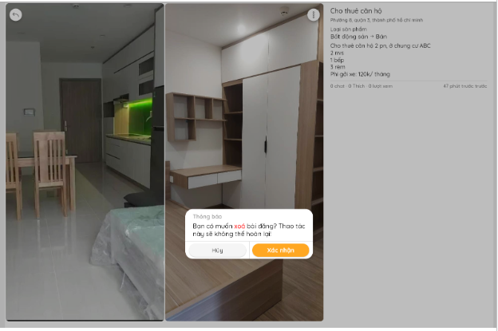
- Lưu ý:
- Người đăng bài có thể xóa bài đăng của mình bất kỳ lúc nào kể cả khi bài đăng đã được duyệt.
- Bài đăng được xóa sẽ không còn xuất hiện trong mục “Quản lý bài đăng”.
6.4 Tìm kiếm thông tin dành cho người mua
Người Mua hoặc tìm kiếm thông tin nên thực hiện theo các bước sau đây khi có nhu cầu mua bán/thuê bất động sản hoặc đồ dùng:
Bước 1: Truy cập vào Website Quanhta.vn
Bước 2: Lựa chọn một trong 2 mục quan tâm: “Nhà đất” hoặc “Đồ dùng”
- Tên xã, phường, quận huyện, tên tỉnh, thành phố. Ví dụ “Sơn trà” 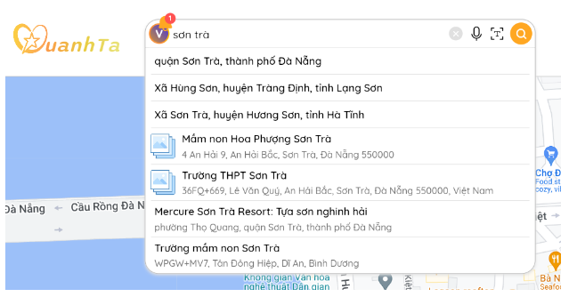
- Địa chỉ cụ thể: 64 Cống Quỳnh 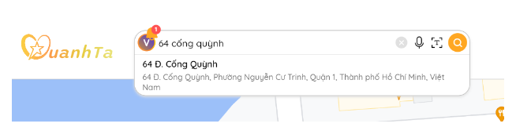
- Địa danh, ví dụ: Cầu rồng đà nẵng 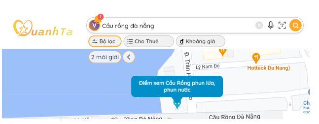
- Tọa độ sao chép từ Google map, Ví dụ:10.794949818001266, 106.65869501173943 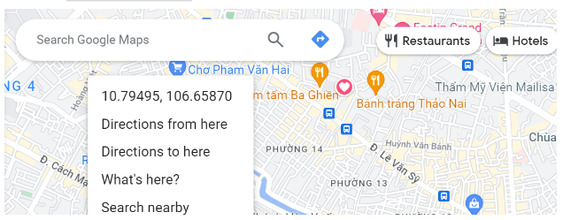 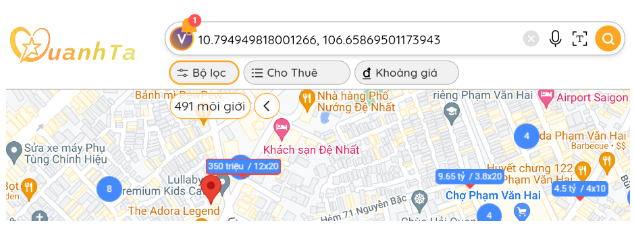
- Tọa độ trên sổ đỏ/sổ hồng hay Bản vẽ sơ đồ nhà đất 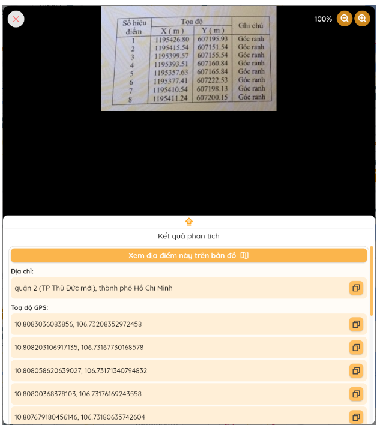 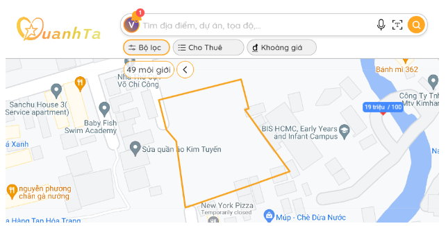
a. Nếu tìm kiếm “Nhà đất”
- Đối với mối quan tâm là bất động sản thì nhấn vào mục “Nhà đất”.
- Giao diện để tìm kiếm thông tin mua bán cho thuê bất động sản như hình sau:
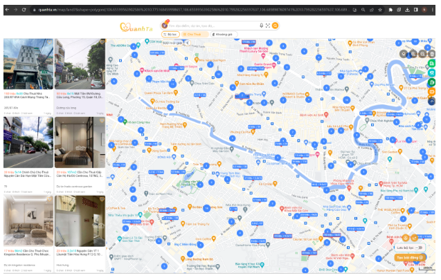- Điền vào thanh tác vụ gồm:
- Sau khi điền từ “Sơn trà”, danh sách liên quan đến Sơn trà sẽ xuất hiện. Chọn dòng đầu tiên “quận Sơn Trà, thành phố Đà Nẵng” nếu đó là quận bạn cần tìm.
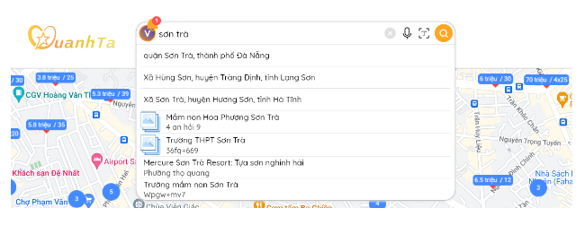- Thông tin bài đăng sẽ xuất hiện bên trái màn hình. Vị trí bài đăng sẽ hiện ở bản đồ bên phải màn hình.
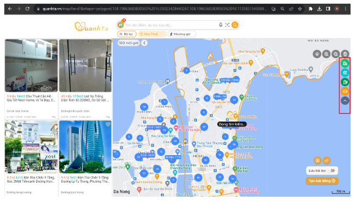- Chọn phần “Bán” hoặc “Cho thuê” trên thanh tác vụ.
- Chọn phần “Khoảng giá”trên thanh tác vụ để thiết lập giá.
- Chọn icon bên tay phải (khung đỏ) để hiện vị trí các tòa nhà, dự án, trường học, trạm xăng, trạm sạc.
- Chọn “Bộ lọc” để muốn lọc về loại nhà đất và giá, bấm bút “Áp dụng” khi đã thiết lập xong.
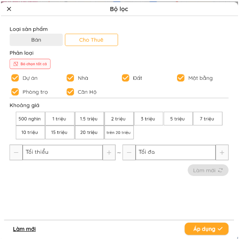- Nhấn vào bài đăng cần quan tâm, chi tiết bài đăng sẽ xuất hiện. Nhấn vào nút trái tim nếu bạn quan tâm muốn lưu lại tin bán đất trên.
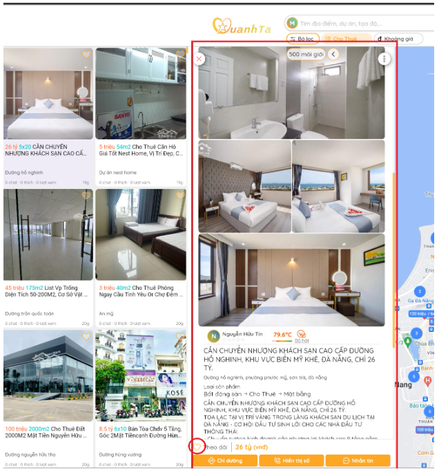- Nhấn vào “Từ chối” nếu không thích tin bán đất này xuất hiện lần sau. Nhấn vào “Hiển thị số” nếu muốn tìm cách liên lạc với người bán. Nếu số điện thoại xuất hiện thì có thể sử dụng số này để gọi cho người bán. Nhấn vào “Chỉ đường” nếu muốn tìm đường đến vị trí bất động sản trên Google Map.
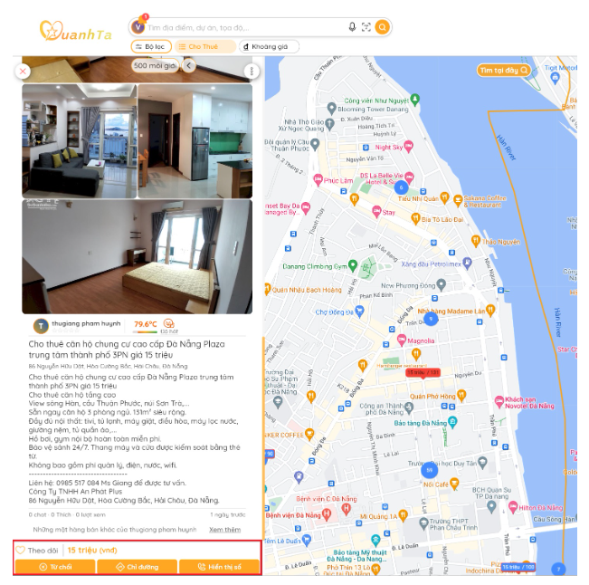 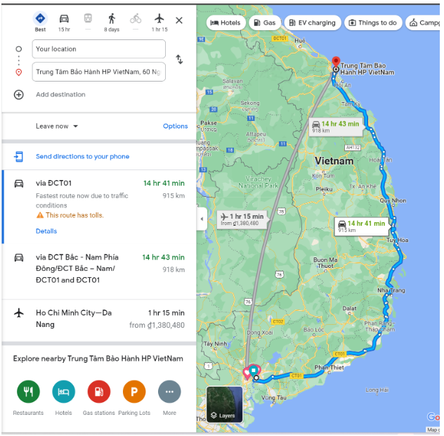b. Nếu tìm kiếm “Đồ dùng”
Đối với mối quan tâm là đồ dùng nhấn vào mục “Đồ dùng”.
6.5 Tính năng chat
Xem quy định khi sử dụng tính năng chat tại đây.
a. Đối với người mua hàng:
Bước 1: Đăng nhập bằng số điện thoại và mật khẩu đã đăng ký
Bước 2: Tìm kiếm và xác định được mặt hàng và nhắn tin trao đổi qua tính năng chat
Bước 3: Nhắn tin và trao đổi thông tin, giao dịch nếu đạt được thỏa thuận.
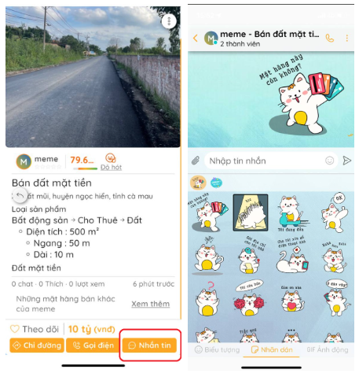b. Đối với người bán hàng:
Khi đăng bài, người đăng đánh dấu vào mục “Liên hệ qua ứng dụng” nếu muốn chọn kênh liên hệ qua chat. Người bán có thể vào xem mục Tin nhắn để xem tin nhắn và sử dụng tính năng Chat để trao đổi giao dịch.
6.6 Tính năng đánh giá và xem đánh giá
a. Đối với người mua hàng:
Xem quy định về việc đánh giá tại đây. Để đánh giá người bán/mua, cần thực hiện các bước sau:
Bước 1: Chọn bài đăng có sản phẩm đã mua
Bước 2: Chọn mục đã mua như trên màn hình
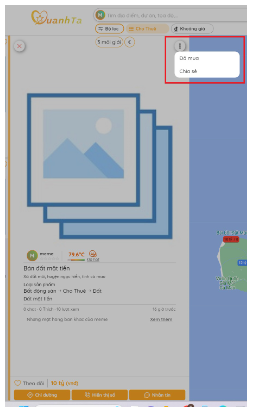Bước 3: Lựa chọn sự đánh giá của bạn và ghi đánh giá
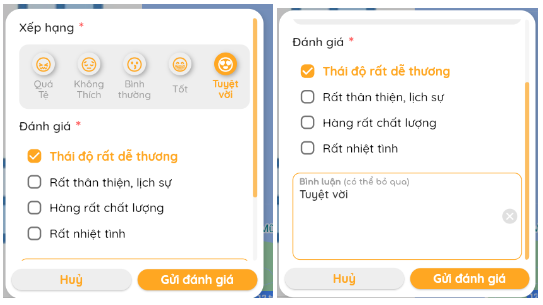b. Xem/ tham khảo đánh giá lịch sử giao dịch
Để quyết định nên lựa chọn giao dịch hay không, người dùng có thể vào xem lịch sử giao dịch của thành viên khác theo các bước sau:
Bước 1: Vào tin đăng, chọn xem thông tin của người đăng
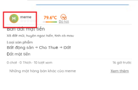Bước 2: Xem đánh giá để đưa quyết định.
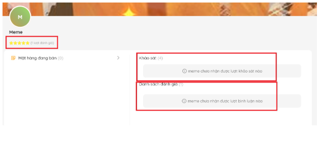